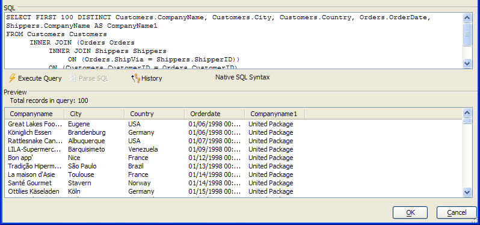

SQL Genie Preview Window
When using the SQL Genie you will see a preview of the records that the current version of the SELECT statement will return. This preview is at the bottom of the dialog box.

Any time that you change the SELECT statement, the  Execute Query button will appear. Click it to refresh
the contents of the Preview window.
Execute Query button will appear. Click it to refresh
the contents of the Preview window.
See Also